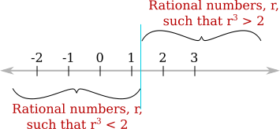

02 Dedekind Cuts
In the previous section, we looked at the real numbers and showed that not every real number is rational. We were able to produce a variety of specific irrational numbers. But the approach to real numbers was simply to say that real numbers correspond to points on a line. This leaves open the question of exactly what a "line" is. It was not even immediately clear that there are non-rational numbers, so simply relying on intuition about geometric lines is not going to give us a full understanding of the real numbers. What we need is a way to construct a specific mathematical object to represent the real numbers—something definite enough that we can prove things about it. In modern mathematics, mathematical objects are defined in terms of sets.
There are several approaches to building a set to represent the real numbers. The one used in Section 1.2 of the textbook is Dedekind cuts. For us, Dedekind cuts are simply a way to get a concrete representation of the real numbers. In fact, once we have done that and used them to get some understanding of the real numbers, you should pretty much forget about them.
The idea behind Dedekind cuts is the observation that any real number, $x,$ divides the rational numbers into two pieces, the rational numbers that are less than $x$ and the rational numbers that are greater than $x.$ (Of course, if $x$ is rational, then it's not included in either of these two pieces.) For $x=\root 3 \of 2,$ we can easily specify the pieces without even mentioning $\root 3 \of 2.$ In this picture, the gray line represents $\Q,$ the set of rational numbers; it's gray rather than black because all of the irrational numbers are missing. The vertical line marks the division point that represents the cube root of two:

A Dedekind cut can be thought of a division point in the rational numbers that cuts $\Q$ into two pieces of this sort. To make this more specific, and express it in terms of sets, we define a Dedekind cut to be the left-hand piece in such a division. That is, it is a subset of $\Q$ containing all of the rational numbers in the left-hand piece. (Sometimes, a Dedekind cut is defined as an ordered pair containing both the left-hand piece and the right-hand piece; that would make some proofs easier but would complicate the definition.)
A real number is then defined as a Dedekind cut, and $\R,$ the set of real numbers, is the set of all Dedekind cuts.
The problem is to say exactly which subsets of $\Q$ are Dedekind cuts. We can't just say that a real number $\gamma$ is the subset consisting of all real numbers less than $\gamma.$ That would be a circular definition! We have to say what it means to be a Dedekind cut without referring to a real number that doesn't exist yet. The book gives three conditions on a subset of $\Q$ that the subset must meet in order to be a Dedekind cut:
Definition: A Dedekind cut is a subset, $\alpha,$ of $\Q$ that satisfies
- $\alpha$ is not empty, and $\alpha$ is not $\Q$;
- if $p\in\alpha$ and $q<p,$ then $q\in\alpha$; and
- if $p\in\alpha,$ then there is some $r\in\alpha$ such that $r>p$
The three requirements just say, in a mathematically exact way, that a Dedekind cut consists of all rational numbers to the left of some division point. Each Dedekind cut, that is each possible division point, represents a real number. This definition constructs the real numbers entirely in terms of the rational numbers, using only basic set operations.
Of course, $\R$ is more than just a set. There are operations such as $x+y$ and $x<y$ that need to be defined for real numbers. There must be a way of defining such operations in terms of Dedekind cuts and proving that they have all of the expected properties. The textbook does this for only a few properties, and I won't try to expand on what it does. One of the most important things for us is defining $\alpha<\beta$ for Dedekind cuts $\alpha$ and $\beta.$ The definition uses the fact that $\alpha$ and $\beta$ are defined as sets: $\alpha<\beta$ if and only if $\alpha\subset\beta,$ and $\alpha\le\beta$ if and only if $\alpha\subseteq\beta.$ (Here, $A\subset B$ means that $A$ is a proper subset of $B$; that is, $A$ is contained in but not equal to $B.$ And $A\subseteq B$ means that $A\subset B$ or $A=B.$)
With this definition, it becomes possible to prove one of the most important properties of the real numbers, the least upper bound property. That will be the topic of the next section.
As an example, let's prove the "trichotomy" law for real numbers. That is, for real numbers $\alpha$ and $\beta,$ exactly one of the following is true: $\alpha<\beta,$ $\alpha=\beta,$ or $\beta<\alpha.$ In terms of Dedikind cuts, exactly one of $\alpha\subset\beta,$ $\alpha=\beta,$ or $\beta\subset\alpha$ is true. A picture of two Dedekind cuts makes this clear, but let's try to prove it using only the definition.
First consider the case $\alpha=\beta.$ In that case, both $\alpha\subset\beta$ and $\beta\subset\alpha$ are false, so the result holds in this case.
Now consider the case $\alpha\ne\beta.$ We must show that exactly one of $\alpha\subset\beta$ and $\beta\subset\alpha$ is true. They can't both be true, since that would mean by definition that $\alpha=\beta.$ We still have to show that one of them is true.
Since $\alpha\ne\beta,$ then either there is some $p\in\alpha$ such that $p\not\in\beta$ or there is some $p\in\beta$ such that $p\not\in\alpha.$ We prove the first case; the second case is similar. So, suppose that $p$ is a rational number such that $p\in\alpha$ and $p\not\in\beta.$ We show that in this case, $\beta\subset\alpha.$
Let $q\in\beta.$ We must show $q\in\alpha.$ We know that $q\in\beta$ and $p\not\in\beta.$ It follows that $q<p,$ for if $p<q,$ then $p$ would be in $\beta$ by property 2 of Dedekind cuts (applied to $\beta$). So we have $p\in\alpha$ and $q<p.$ By property 2 of Dedekind cuts (applied to $\alpha$), this implies that $q\in\alpha,$ as we wanted to show.